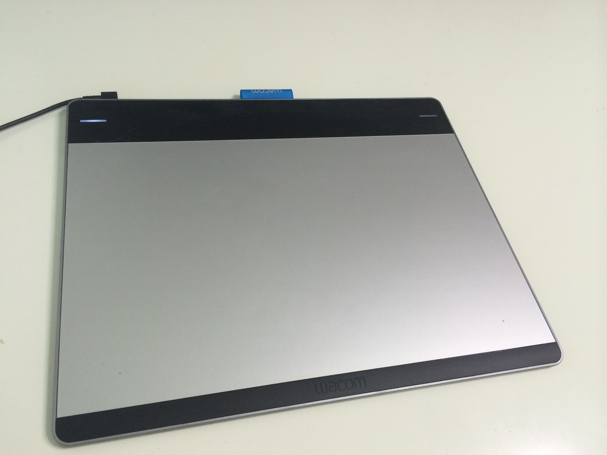

Software

Wie bereits erwähnt benötigt man ein Zeichenprogramm um auf dem Computer zeichnen zu können.
Es gibt verschiedenste Zeichenprogramme, jedoch haben sich bei vielen die folgenden bewährt.
- Paint Tool SAI (Windows only)
- Photoshop
- Sketchbook Pro
Mein persönlicher Favorit ist Paint Tool SAI wenn man nur auf Windows arbeitet. Wenn man mit Mac und Windows arbeitet kann man entweder Photoshop oder Sketchbook Pro benutzen, je nach dem welches man bevorzugt.
Hardware

Man kann zwar mit der Maus zeichnen, jedoch geht es mit einem Grafiktablett und Stift deutlich besser.
Grafiktabletts werden von einigen Herstellern produziert. Jedoch hat sich Wacom als Vorreiter und Favorit etabliert. Zu ihrem Grafiktablettsortiment gehören:
- Wacom Intuos Pen (S,M)
- Wacom Intuos Pen & Touch (S,M)
- Wacom Intuos Manga
- Wacom Intuos Pro (S, M)
- Wacom Cintiq
Für den Hobbygebrauch reichen die Wacom Intuos Pen, Intuos Pen & Touch und Intuos Manga Grafiktabletts. Die Pen und Pen & Touch Tablets gibt es in zwei Grössen, S und M.
Sobald es etwas seriöser werden sollte kann man zu den Intuos Pro oder den Cintiq greifen.
Ich persönlich nutze das Intuos Pen & Toch M. Wer auf die Touch-Funktionalität verzichten kann soll sich eines der Intuos Pen holen und etwas Geld sparen.